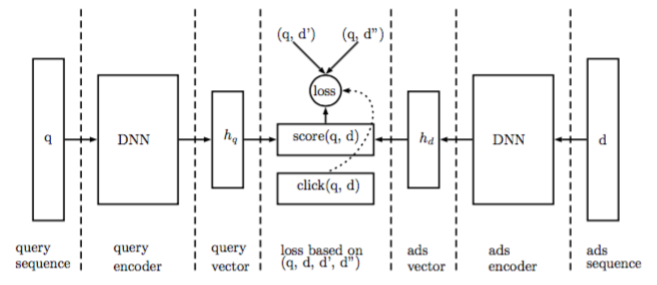
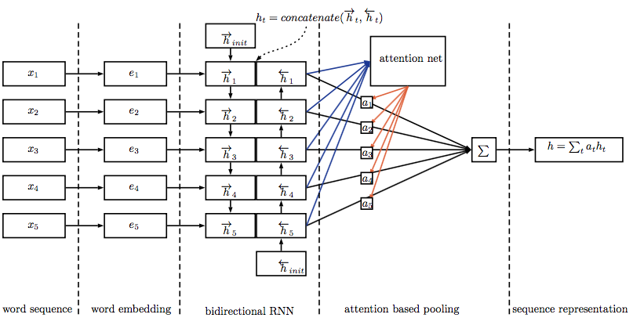
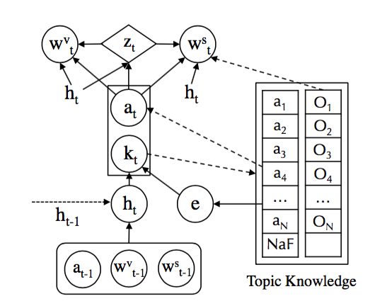
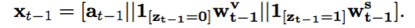
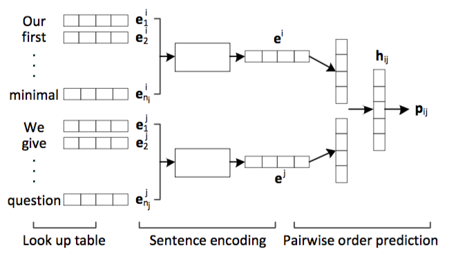

PaperWeekly 2016.08.05 第一期
引
学术界和工业界的需求和关注点不同，学术界更加注重未知领域的探索和方法的创新，研究的问题比较抽象，而工业界更加关注实际问题，方法不管是否创新，只要能够解决问题就是好方法，所面对的问题比paper中提炼出的数学问题更加具体，需要处理的细节更多。
paper的水平也是良莠不齐，尤其是arxiv上刷出来的paper更是水平各异。但整体来说，读paper会带来很多的启发，可以跟踪学术界对某一类问题的研究进展，不断地更新技术。关注工业界技术的应用和产品的更迭，可以不断地提炼出新的需求、新的数学问题，从而促进学术地发展，两者其实关系非常紧密。
本周开始，将paperweekly进行改版，从之前的每天一篇paper，改为每周一篇，内容包括多篇paper，这些paper可能相关、也可能不那么相关，但会说清每篇paper解决的问题和解决的方法，旨在拓宽视野，带来启发。本期是改版后的第一期，形式会一直不断地改进，希望工业界和学术界的朋友都能够有所收获。
DeepIntent: Learning Attentions for Online Advertising with Recurrent Neural Networks
关键词
在线广告、RNN、Attention
来源
kdd2016
问题
如何用deep learning模型挖掘click logs来理解用户Intent？
方法

对于一个(query,ad)数据对，分别用LSTM encode，然后用下图的方法计算一个attention，得到最终的query和ad vector，构造loss function，取logs中(query,ad)作为正例d+，将ad替换为其他无关ad作为负例d-，训练的目标是让d+的score尽量大，让d-的score尽量小。

评论
工业界有着学术界无法比拟的数据，大规模的真实数据是做deep learning的基础，大型商业搜索引擎积累了大量的ad click logs，利用好这些logs可以赚到更多的钱。attention机制在2015年开始逐渐成为一种流行趋势，借鉴于人类的注意力机制，让model将更多的注意力放在需要注意的地方，而不是每一个地方。本文并没有太多model上的创新，只是简单地将流行的model应用了自己研究的领域中，对工业界更有参考价值。
A Neural Knowledge Language Model
关键词
语言模型、知识图谱
来源
arXiv cs.CL 2016.08.01
问题
在自然语言生成(NLG)问题中，出现次数非常少的entity该如何生成呢？
方法

四个步骤：
1、Input Representation

输入由三个部分拼接而成，第一部分是上一个time step的fact表示，第二部分是上一个time step的词表中的词表示，第三部分是上一个time step的fact description表示，这里fact就是(subject,relation,object)，知识图谱中的一条事实，而后两个部分一定会有一个全为0，因为是二选一的关系，但为了保证每一次的输入都是等长向量，所以用拼接来做。得到输入之后，用LSTM来encode。
2、Fact Prediction
通过1的结果来预测当前word可能相关的fact，得到的结果是一个index，然后从topic knowledge中获得相应的表示，这里的knowledge embedding都是用transE训练好的，在整个模型训练中并不更新。
3、Knowledge-Copy Switch
根据1和2的结果，共同来预测当前要生成的词是从词表中获取的高频词还是从knowledge中获取的entity，典型的二分类问题。
4、Word Generation
根据3的结果，来生成当前time step的词。对于词表中的高频词，和之前的生成方法一致；对于fact description中的entity词，通过预测词的position来copy这个词。
评论
语言模型是一个基本问题，传统的方法都有着一个尴尬之处是，会生成大量的
Neural Sentence Ordering
关键词
句子排序
来源
arXiv cs.CL 2016.07.23
问题
给定乱序的N句话，如何将其按照逻辑排列好？（貌似是英语考试中的一种题型）
方法

本文定义的问题是给定n句话，找出最优排序，将这个问题降维到二维，就是如何排列两句话的顺序。上图给出了model的思路，对两句话分别进行encode，得到两个向量表示，然后进行打分，分数表示当前顺序是正确顺序的概率。这里的encode部分，分别用了每句话中word embeddings的加权平均、RNN和CNN来表示。
得到两两的排序之后，本文用beam search来得到整体最优的排序。
评论
多文档摘要问题中通用的一种做法是从每篇文档中都提取出一句或几句重要的话，然后进行排序。在英语考试中，有一种题型是给定你打乱顺序的几段话，然后根据逻辑将其排序。本文在学术上没有什么新的东西，但本文在构建neural model的时候，用到的数据集却非常容易构建，这意味着你在工程中应用这个方法来解决排序问题是可行的方案，所以本文更加适合有句子排序应用需求的工程人员来精读。
提问
计算机的会议非常多，各种level的都有，arXiv上每天都可以刷出一些paper，不同类型、不同level的paper适合不同需求的人来读，我觉得好东西的标准是适合而不是在某一个具体指标上达到最大，对你有用的东西才是适合你的好东西，有些特别牛逼的东西，有着极高学术价值的东西不见得适合工程人员来读，但也不应该是那种觉得学术上的东西离工程太远，没有什么具体用的态度，从各种各样的东西汲取养分，丰富和充实自己才是硬道理。读了一些paper，也该思考一些问题了，这里提出一些比较naive的问题，欢迎大家踊跃留言和讨论。
1、
2、attention model几乎满大街都是，最早在机器翻译领域中开始用这种模型，虽然在其他nlp领域中都取得了不错的成绩，但目前的attention真的适合每一类具体问题吗？是不是有一点为了attention而attention的感觉？neural summarization和machine translation真的可以完全类比吗？或者说attention适合解决具有什么特征的问题呢？
3、信息越多，model的效果一定会越好。现在外部信息非常丰富，但是如何融合到当前流行的model中来呢？如何将特定领域内构建的知识图谱完美地与特定任务中的model进行结合呢？以task-oriented bot为例，能够将客户的领域知识与bot response功能结合起来，做成一个更加高级的bot呢？
这里，我抛个砖，引个玉，希望更多的人能够参与讨论和提出问题。